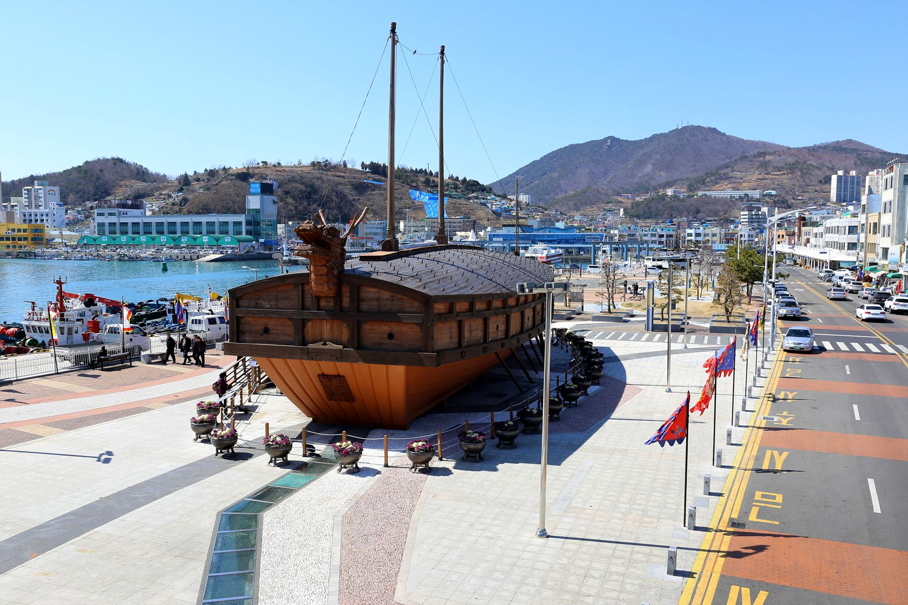
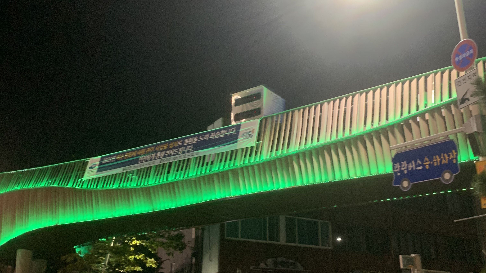
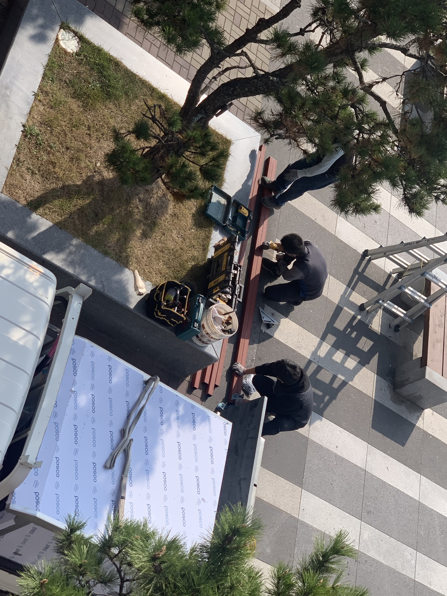
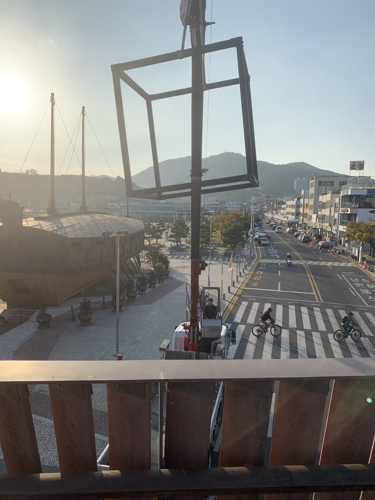
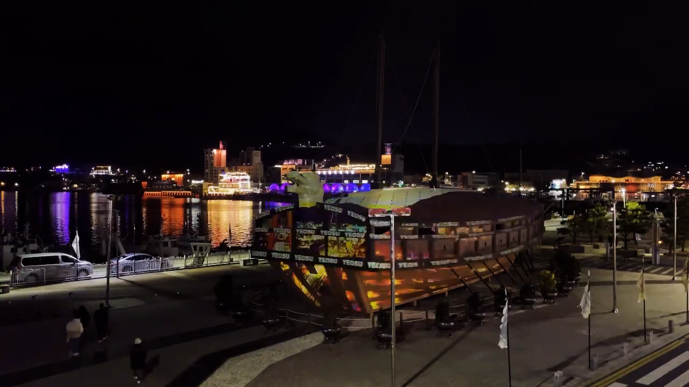
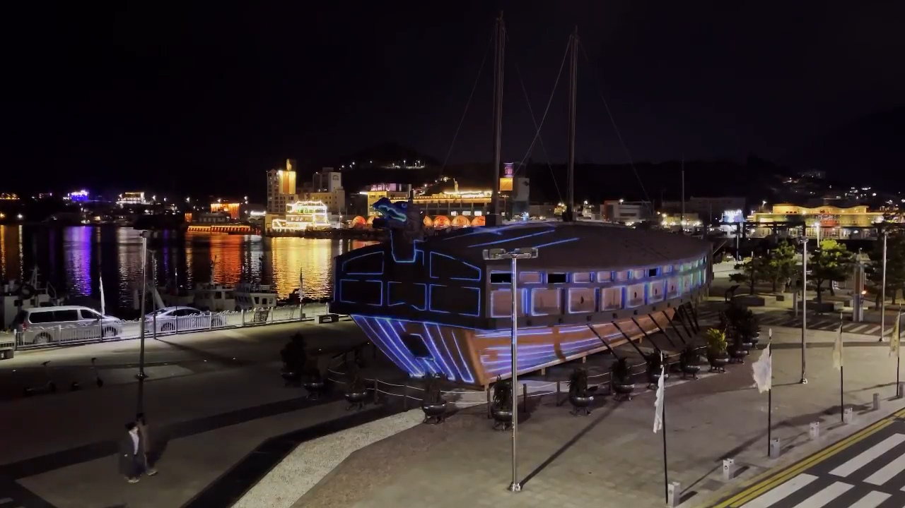
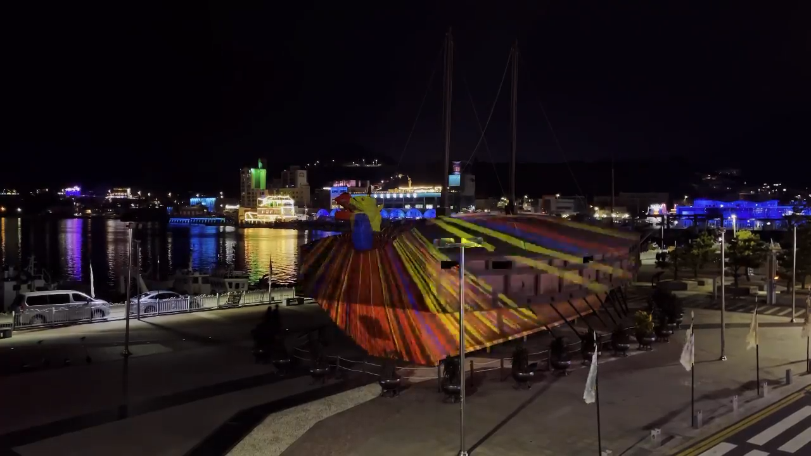

01
Site Analysis & Field Research
“공간의 조건과 맥락을 읽는 단계”
현장 공간의 구조, 빛 환경, 동선, 제약 조건 분석

여수 거북선 광장
2021
여수 문화재 야행
INTEGRATED PROCESS
Lightchaser는 공간 설계부터 구현까지 전 과정을 책임지며, 콘텐츠와 기술이 분리되지 않는 미디어 파사드를 만듭니다.
“공간의 조건과 맥락을 읽는 단계”
현장 공간의 구조, 빛 환경, 동선, 제약 조건 분석

“파사드 기술 구조를 설계하는 단계”
하드웨어 : 16,000 ansi 프로젝터 2대
투사방식 : 측면 2대 프로젝터 투사




WORK OVERVIEW
《승리의 함선》은 여수 이순신광장에 놓인 거북선이라는 상징적 대상지에 프로젝션 맵핑을 적용해, 역사적 오브제를 ‘현재의 감각’으로 다시 작동시키는 미디어파사드 작업이다.
이 작업에서 ‘승리’는 전투의 재현이라기보다, 시간을 견디며 남아 있는 형태가 오늘의 도시 공간에서 다시 빛을 얻는 순간을 의미한다. 거북선의 구조와 표면은 단순한 조형물이 아니라, 공동체가 축적해온 기억과 서사의 그릇이다.
우리는 그 표면을 스크린으로 취급하기보다, 형태가 가진 리듬(선의 흐름, 면의 분절, 윤곽의 긴장)을 빛으로 번역해 ‘대상 자체가 발화하는 조건’을 만들고자 했다.



유환
Lpers media art, 에이플랜컴퍼니